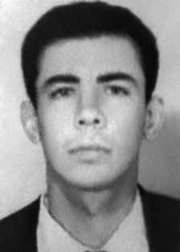

Manoel
José
Nurchis
CIRCUNSTÂNCIAS DA MORTE
Segundo o Relatório Arroyo, no dia 30/9/1972 Manoel (Gil) estava junto com outros dois guerrilheiros no acampamento do Comando Militar (CM), próximo à região de Caianos. Consta que na ocasião, preparavam-se para encontrar com membros do Destacamento C da guerrilha. No entanto, foram surpreendidos pela presença de tropas das Forças Armadas na região: Gil foi um dos feridos no confronto que se seguiu. Relatório do Centro de Informações do Exército (CIE), de 1975, inclui o nome de Manoel numa lista de guerrilheiros mortos no Araguaia, estabelecendo o dia 30/09/1972 como a data de sua morte. iv De acordo com o Relatório do Ministério da Marinha, de 1993, Manoel foi morto em outubro de 1972, em Xambioá (GO). v De acordo com o Serviço Nacional de Informações (SNI), em uma lista de mortos e desaparecidos na Guerrilha do Araguaia, Manoel José Nurchis surge como morto em 20 de dezembro de 1972. vi Segundo o livro Direito à Memória e à Verdade, o sobrevivente Dower Cavalcante conta que Nurchis enfrentou os paraquedistas em um combate que durou cerca de duas horas e só morreu após receber o 12º tiro de metralhadora. Regilena de Carvalho Leão de Aquino, outra guerrilheira presa, também relatou o confronto com paraquedistas, contudo atribui esta façanha ao guerrilheiro Idalísio Soares Aranha Filho e não a Manoel. No Relatório Manobra Araguaia/72 – Operação Papagaio consta que a Força Tarefa do 6º Batalhão de Caçadores fez uma ação de patrulhamento, executada na região de Crentes pelo 1º Comando Geral, tendo como resultado a morte de João Carlos Haas Sobrinho, Ciro Flávio Salazar de Oliveira e José Manoel Nuchis.vii O relatório foi assinado pelo General da Brigada Antônio Bandeira, Comandante da 3ª Brigada de Infantaria.
According to the Arroyo Report, on 9/30/1972 Manoel (Gil) was together with two other guerrillas in the Military Command (CM) camp, near the Caianos region. It is said that at the time, they were preparing to meet with members of Detachment C of the guerrilla. However, they were surprised by the presence of Armed Forces troops in the region: Gil was one of those injured in the confrontation that followed. Report from the Army Information Center (CIE), from 1975, includes Manoel's name in a list of guerrillas killed in Araguaia, establishing 09/30/1972 as the date of his death. iv According to the 1993 Ministry of the Navy Report, Manoel was killed in October 1972, in Xambioá (GO). v According to the National Information Service (SNI), in a list of dead and missing people in the Araguaia Guerrilla, Manoel José Nurchis appears as dead on December 20, 1972. vi According to the book Direito à Memória e à Verdade, survivor Dower Cavalcante says that Nurchis faced the paratroopers in a fight that lasted around two hours and only died after receiving the 12th machine gun shot. Regilena de Carvalho Leão de Aquino, another arrested guerrilla, also reported the confrontation with paratroopers, however she attributes this feat to the guerrilla Idalísio Soares Aranha Filho and not to Manoel. The Manobra Araguaia/72 – Operation Papagaio Report states that the Task Force of the 6th Hunter Battalion carried out a patrolling action, carried out in the Crentes region by the 1st General Command, resulting in the deaths of João Carlos Haas Sobrinho, Ciro Flávio Salazar de Oliveira and José Manoel Nuchis.vii The report was signed by Brigade General Antônio Bandeira, Commander of the 3rd Infantry Brigade.
Según el Informe Arroyo, el 30 de septiembre de 1972 Manoel (Gil) se encontraba junto a otros dos guerrilleros en el campamento del Comando Militar (CM), cerca de la región de Caianos. Se dice que en ese momento se disponían a reunirse con miembros del Destacamento C de la guerrilla. Sin embargo, les sorprendió la presencia de tropas de las Fuerzas Armadas en la región: Gil fue uno de los heridos en el enfrentamiento que siguió. Informe del Centro de Información del Ejército (CIE), de 1975, incluye el nombre de Manoel en una lista de guerrilleros asesinados en Araguaia, estableciendo como fecha de su muerte el 30/09/1972. iv Según el Informe del Ministerio de Marina de 1993, Manoel fue asesinado en octubre de 1972, en Xambioá (GO). v Según el Servicio Nacional de Información (SNI), en una lista de muertos y desaparecidos de la Guerrilla de Araguaia, Manoel José Nurchis aparece como muerto el 20 de diciembre de 1972. vi Según el libro Direito à Memória e à Verdade, el sobreviviente Dower Cavalcante dice que Nurchis se enfrentó a los paracaidistas en una pelea que duró alrededor de dos horas y sólo murió después de recibir el duodécimo disparo de ametralladora. Regilena de Carvalho Leão de Aquino, otra guerrillera arrestada, también denunció el enfrentamiento con los paracaidistas, pero atribuye esa hazaña al guerrillero Idalísio Soares Aranha Filho y no a Manoel. El Informe Manobra Araguaia/72 – Operación Papagaio afirma que el Grupo de Trabajo del 6.º Batallón de Cazadores realizó una acción de patrullaje, realizada en la región de Crentes por el 1.º Comando General, que tuvo como resultado la muerte de João Carlos Haas Sobrinho, Ciro Flávio Salazar de Oliveira y José Manoel Nuchis.vii El informe fue firmado por el General de Brigada Antônio Bandeira, Comandante de la 3.ª Brigada de Infantería.